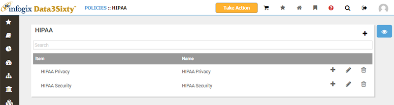
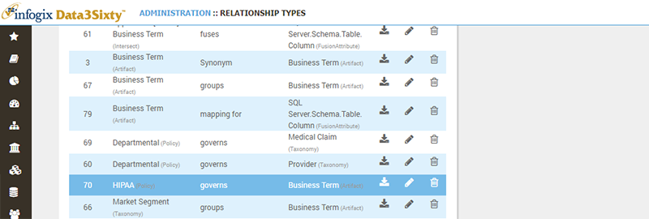
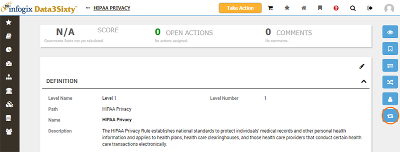
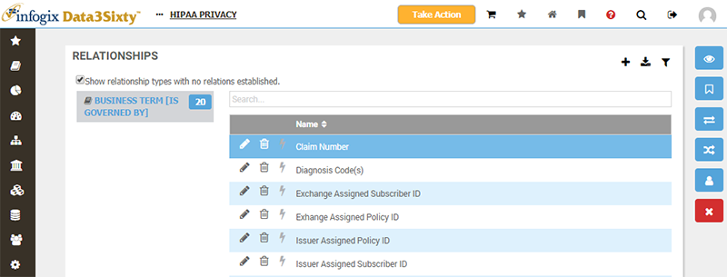
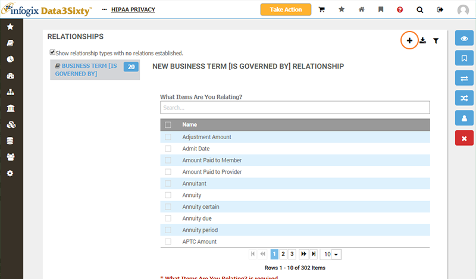
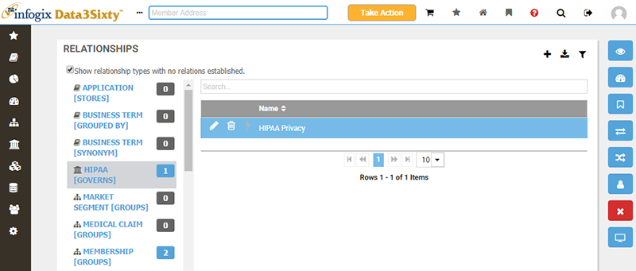

Policies can be related to Glossary artifacts and models, to capture which regulations govern business terms, applications, processes, models and so forth.
Before we look at relating policies in more detail, please ensure that you have checked out the following related topics:
You relate policies to assets by creating a Governs-Is Governed By relationship between a policy asset and the asset to be governed.
Consider the HIPAA insurance regulation policy shown below:

You wish to capture that a number of insurance-related Glossary artifacts are governed by the HIPAA Privacy policy asset.
A Relationship Type must exist between the policy and the artifact type. Please refer to the topic Establishing relationships for more information. You must have access to the Administration-MetaModel-Relationships screen to create relation types, so you may need to ask your system administrator for assistance:

With the Relationship Type in place, you then navigate to the page for the policy asset:

From here you choose the Relations view and locate the Relationship Type which pairs the policy to the artifact with a Is Governed By relationship:

With the relationship type selected, you can then hit the Add button to choose which artifacts to group:

Alternatively, you can create the inverse of the relationship from the screen for an asset to govern. Simply choose the relation type 'Policy (Governs)' and choose the policy asset you wish to govern the asset by:
